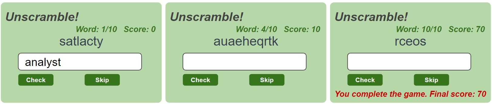

Final Exam Answer#
Multiple Choice Questions#
Which of the following statements is NOT true about Firebase Firestore?
Firestore is schema-based.
Firestore supports SQL-like queries.
Firestore is primarily a NoSQL database.
Firestore allows for real-time updates to data.
Which one of the following is not a valid Firestore query operator?
`in}
`array-contains}
`!=}
`less-than}
A limitation of Firebase Firestore queries is:
Inability to sort data
Lack of support for subcollections
Limited to 10 documents per query
Inability to use inequalities on two different fields
In Firestore, a One-to-Many relationship is implemented using:
Array fields
Subcollections
Separate collections
Document references
To create a new account with email and password in Firebase, you use:
signInWithEmailAndPasswordcreateUserWithEmailAndPasswordregisterUserWithEmailnewUserSignup
In JavaScript, a problem with using multiple scripts is:
High load time
Name conflicts
Syntax errors
Incompatibility with browsers
Which is NOT a module type used in JavaScript?
CommonJS
ES6 Modules
AMD
ESMX
What is JSX in React?
A syntax extension for JavaScript that allows writing HTML in React
A JavaScript framework for building server-side applications
A built-in method for managing state in React components
A database query language used in React applications
What is Vuetify primarily used for in Vue.js development?
Database management
State management
User interface design
Server-side rendering
What is the primary purpose of Pinia in Vue.js applications?
To handle routing between pages
To manage the application’s state
To render UI components
To facilitate communication with a backend server
In Pinia, how are shared states accessed within Vue components?
By using the
injectfunctionThrough the
useStorefunctionVia the
getPiniamethodUsing the
mapStatehelper
True/False Questions#
Subcollections in Firestore can have their own subcollections.
True
False
Vuetify provides a set of Vue components that are styled according to Material Design specifications.
True
False
Pinia stores are reactive, and their state can be directly modified from Vue components.
True
False
Coding Questions#
Given the following type declarations.
type Product = { name: string, price: number }; type Order = { products: Array<Product>, isDelivered: boolean }; type Customer = { name: string, city: string, orders: Array<Order> };
Your task is to implement the following functions using only JavaScript Array functions:
.every(),.map(),.flatMap(),.some(),.sort(), etc.Your answer should not require additional data storage (local/global variables) beyond what are provided as function input arguments of each function below.
Answers using traditional
for-loopor.forEachwill not be accepted.Collect the cheapest product ordered by a particular customer.
function cheapestProductOrderedByCustomer(cust: Customer): Product { // Implement the logic to find and return // the cheapest product ordered by the given customer return cust.orders .flatMap((o) => o.products) .sort((a, b) => a.price - b.price)[0]; }
Collect all undelivered products ordered in a city
function undeliveredProductsInCity( db: Array<Customer>, city: string ): Array<Product> { // Implement the logic to return an array of // all undelivered products ordered in a city return db .filter((customer) => customer.city === city) .flatMap((customer) => customer.orders) .filter((order) => !order.isDelivered) .flatMap((order) => order.products); }
Alice and Emma are exploring a movie app that is connected to Firebase Cloud Firestore. The app allows users to interact with the movies in various ways.
Alice wants to add a new review for a movie in the Firestore database. Create the
addMovieReviewfunction inreview-update.tsto add a new review for a movie identified by itsmovieIdin thereviewscollection. Each review document should includeid: string,movieId: string,content: string, andrating: numberfields.
// data-types.ts type Review = { id: string, movieId: string, content: string, rating: number, };
// review-update.ts const app: FirebaseApp = initializeApp(firebaseConfig); const db: Firestore = getFirestore(app); function addMovieReview( movieId: string, reviewContent: string, rating: number ) { // Implement the logic to add a new review // for a movie with the given movieId, reviewContent, and rating const review = { movieId, content: reviewContent, rating, }; addDoc(collection(db, "reviews"), review) .then((docRef) => { console.log("Review added with ID:", docRef.id); }) .catch((error) => { console.error("Error adding review:", error); }); }
BonusEmma is interested in getting notifications on her smartphone whenever a new review is added for her favorite movie. Implement thelistenToNewReviewsfunction inreview-update.tsto enable real-time notifications on Emma’s smartphone. Additionally, complete the implementation inMovie.vueto display these reviews as they are added.// review-update.ts function listenToNewReviews( movieId: string, callback: (review: Review) => void ) { // Implement the logic to listen to new reviews for a movie with the given id const reviewsQuery = query( collection(db, 'reviews'), where('movieId', '==', movieId) ); const unsubscribe = onSnapshot(reviewsQuery, (querySnapshot) => { querySnapshot.docChanges().forEach((change) => { if (change.type === 'added') { const reviewData = change.doc.data() as Review; callback(reviewData); } }); }); return unsubscribe; }
// Movie.vue <script lang="ts" setup> import { ref, Ref, onMounted, onUnmounted } from "vue"; import { Review } from "../data-types"; import { listenToNewReviews } from "../review-update"; const { movieId } = defineProps<{ movieId: string }>(); const reviews: Ref<Array<Review>> = ref([]); // Function to add the new review to the list of reviews const refreshNewReview = (newReview: Review) => { reviews.value.push(newReview); }; let unsubscribe: () => void; // Add your code implementation here onMounted(() => { unsubscribe = listenToNewReviews(movieId, refreshNewReview); }); onUnmounted(() => { if (unsubscribe) { unsubscribe(); } }); </script>
Assume a hypothetical web service at http://foodinfo.io provides an endpoint
/recipesthat returns recipe details for various cuisines. This API endpoint accepts a query parametercuisineto request specific types of cuisines. The following URL is an example of a request to this web service:http://foodinfo.io/recipes?cuisine=italian,mexican to which the service responds with JSON data in the following format:
[ { cuisineType: "italian", recipes: [ { name: "Spaghetti Carbonara", prepTime: 30, difficulty: "Medium" }, { name: "Margherita Pizza", prepTime: 45, difficulty: "Hard" }, ], }, { cuisineType: "mexican", recipes: [ /* more data here */ ], }, ];
Showcase your skills in using the axios library to interact with the above web service.
Define appropriate TypeScript type(s) to model the response data from this API.
// TypeScript types for the response data type Recipe = { name: string, prepTime: number, difficulty: string }; type Cuisine = { cuisineType: string, recipes: Recipe[], };
Use axios and the Promise
then()function to fetch Italian recipes and store the recipe names in an array. Ensure correct typing and include error handling.
import axios from "axios"; function fetchItalianRecipes(): Promise<string[]> { return axios.get<Cuisine[]>("http://foodinfo.io/recipes?cuisine=italian") .then((response: AxiosResponse) => { if (!response.data) { throw new Error("No cuisine found"); } return response.data.flatMap((c: Cuisine) => c.recipes.map((recipe: Recipe) => recipe.name) ); }) .catch((error) => { console.error("Error fetching cuisine recipes:", error); return []; }); }
Repeat the previous task using async-await syntax, with attention to error handling.
import axios from "axios"; async function fetchItalianRecipessAsync(): Promise<string[]> { // Fetch Italian recipes using async-await try { const response: AxiosResponse = await axios.get<Cuisine[]>( "http://foodinfo.io/recipes?cuisine=italian" ); if (!response.data) { throw new Error("No cuisine found"); } return response.data.flatMap((c: Cuisine) => c.recipes.map((recipe: Recipe) => recipe.name) ); } catch (error) { console.error("Error fetching cuisine recipes:", error); return []; } }
Develop a simple ExpressJS server to mimic the functionality of the above hypothetical web service
foodinfo.io. Your server should accept a single cuisine type in the URL query (e.g.,?cuisine=italian) and return corresponding recipes.Given code snippet:
import express, { Application, Request, Response } from "express"; const app: Application = express(); const PORT = 3000; // Your implementation goes here app.listen(PORT);
Define a TypeScript type for parsing the query parameter in the URL.
// TypeScript type for the query parameter type Query = { cuisine: string };
Implement the
/recipesendpoint in your ExpressJS server to accept a single cuisine type as a URL query parameter (e.g.,?cuisine=italian) and return the corresponding recipes. Use the TypeScript type defined in question (a). The endpoint should:Parse the incoming cuisine type using the defined TypeScript type in question (a).
Send a JSON response using the predefined
cuisineDataarray. AssumecuisineDatais available and formatted as specified in the question.
const cuisineData = [ { cuisineType: "italian", recipes: [ { name: "Spaghetti Carbonara", prepTime: 30, difficulty: "Medium" }, { name: "Margherita Pizza", prepTime: 45, difficulty: "Hard" }, ], }, { cuisineType: "mexican", recipes: [ /* more data here */ ], }, ]; // Implement the /recipes endpoint app.get("/recipes", (req: Request<any, any, any, Query>, res: Response) => { const petRequested = req.query.pet; const resData = petData.find((pet) => pet.pet === petRequested); if (!resData) { res.status(404).json({ error: "Pet type not found" }); return; } res.json(resData); });
Consider a simple game “Word Unscramble” where the player must unscramble 10 words (one word at a time) to earn 10 points for each correct word. The game will be implemented as a Vue 3.x component using Vuetify.
The left screenshot shows a scrambled “catalyst”, but the player incorrectly guessed “analyst” in the input text box.
The middle screenshot shows the player’s current score (10, guessed only one correct word so far), and in the middle of attempting to solve the fourth word, a scrambled “earthquake”
The right screenshot illustrates the scenario where, upon completing 10 words and clicking the Skip button, the final score is displayed. At each step of the game, the player may guess the correct word as many times as desired by pressing the Check button, or skip to the next random word without earning points by pressing the Skip button.

You are to implement the game as a Vue 3.x component assuming the following are available to use:
A string array
stockWordsholds 10 selected words (unscrambled) to use in the game.A function
shuffle()which takes a string and returns a scrambled copy of the string.
Define all the variables and their initial value needed in the component. Be sure to identify whether each variable is a
refor an ordinary TypeScript type.
<script setup lang="ts">
// Add your code implementation here const wordIndex = ref(0); const userInput
= ref(""); const score = ref(0); const result = ref("")
</script>
Show a snippet of code demonstrating how these variables are used in the UI with Vuetify | HTML components. You don’t need to design the entire UI, just the relevant components where the variables are used.
<template>// Add your code implementation here</template>
<p>
<span> Word: {{ wordIndex + 1 }}/{{ stockWords .length }} </span
><span> Score: {{ score }} </span>
</p>
<v-card-title>{{ shuffle(stockWords[wordIndex]) }}</v-card-title>
<v-text-field label="Unscramble" v-model="userInput" />
<p>{{result}}</p>
<v-btn @click="doCheck">Check</v-btn>
<v-btn @click="doSkip">Skip</v-btn>
Complete the following functions
function doSkip() {
// when the Skip button is pressed
if (wordIndex.value < stockWords.length - 1) {
wordIndex.value++;
userInput.value = ""; // Reset for next word
} else {
result.value = `You finished the game. Final score: ${score.value}`;
}
}
function doCheck() {
// when the Check button is pressed
if (userInput.value === stockWords[wordIndex.value]) {
score.value += 10;
doSkip();
}
}